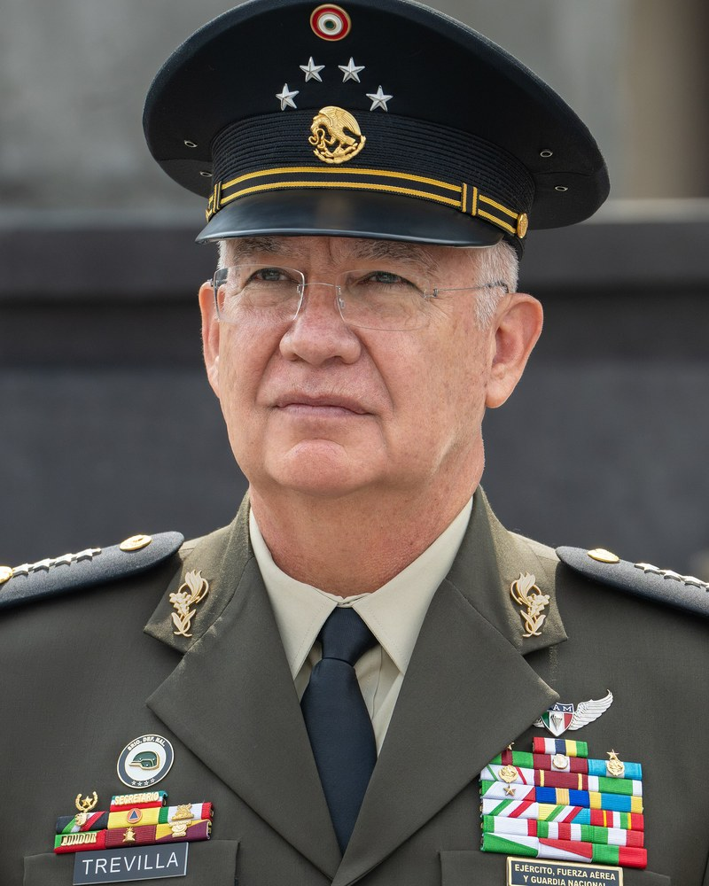
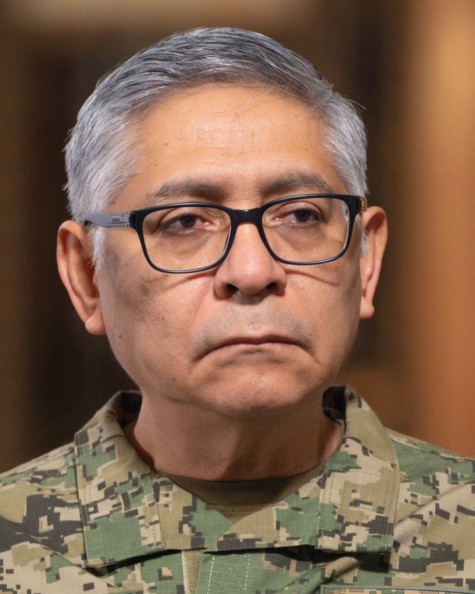
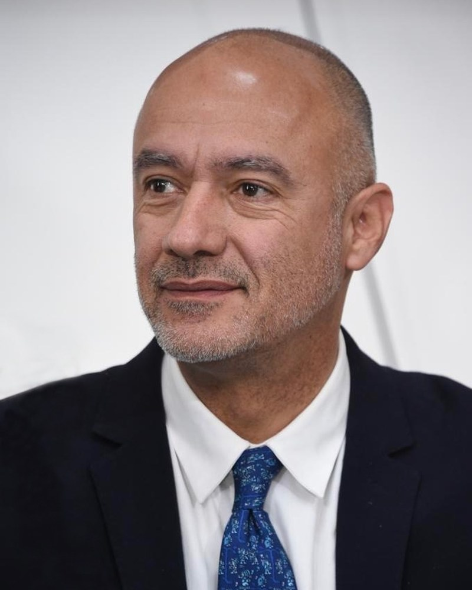
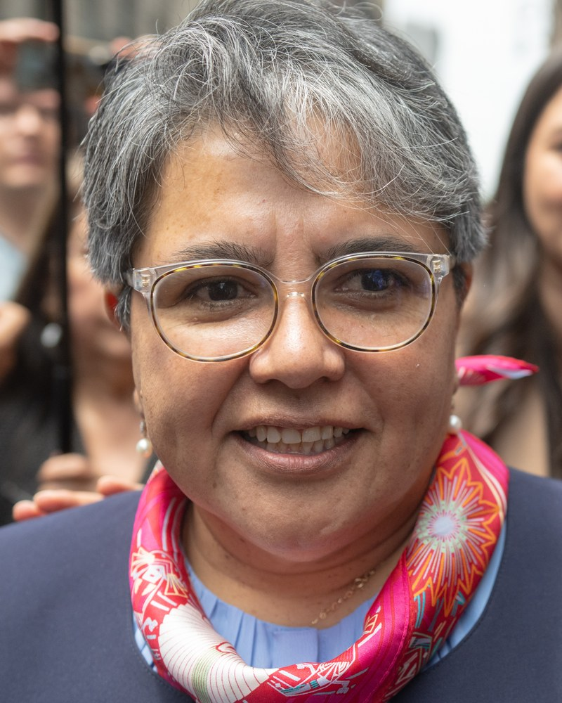

¿Cómo está organizado el Gobierno de México? Organigrama y los tres poderes
Guía educativa del Poder Ejecutivo federal: quién manda, qué hace cada secretaría y en qué ley está escrito. La estructura sale del texto vigente de la Ley Orgánica de la Administración Pública Federal; los titulares, de una tabla pública que se revisa cada semana (última revisión: 20/11/2026).
Los tres Poderes
El organigrama del Ejecutivo
 Presidenta de la RepúblicaClaudia Sheinbaum Pardo · periodo 2024–2030. Jefa de Estado y de Gobierno; manda a las Fuerzas Armadas.
Presidenta de la RepúblicaClaudia Sheinbaum Pardo · periodo 2024–2030. Jefa de Estado y de Gobierno; manda a las Fuerzas Armadas. Secretaría de GobernaciónTitular: Rosa Icela Rodríguez · desde 1 de octubre de 2024
Secretaría de GobernaciónTitular: Rosa Icela Rodríguez · desde 1 de octubre de 2024
Política interior: relación con los otros Poderes, estados, partidos e iglesias; migración, población y protección civil.
Lo que dice la ley que le toca (primeras fracciones):
- Formular y conducir la política interior que competa al Ejecutivo Federal y no se atribuya expresamente a otra dependencia; fomentar el desarrollo político; contribuir al fortalecimiento de las instituciones democráticas; promover la formación cívica y la part…
- Coordinar a los Secretarios de Estado y demás funcionarios de la Administración Pública Federal para garantizar el cumplimiento de las órdenes y acuerdos del titular del Ejecutivo Federal y por acuerdo de éste, convocar a las reuniones de gabinete; acordar con…
- Conducir, siempre que no esté conferida esta facultad a otra Secretaría, las relaciones del Poder Ejecutivo con los demás Poderes de la Unión, con los órganos constitucionales autónomos, con los gobiernos de las entidades federativas y de los municipios y con …
- Garantizar el carácter laico del Estado mexicano; conducir las relaciones entre el Estado y las iglesias o agrupaciones religiosas, así como vigilar y hacer cumplir las disposiciones constitucionales y legales en esta materia
Fundamento: artículo 27 de la Ley Orgánica de la Administración Pública Federal.
Secretaría de Relaciones ExterioresTitular: Roberto Velasco Álvarez · desde 1 de abril de 2026
Política exterior: embajadas y consulados, tratados, pasaportes y protección de mexicanos en el extranjero.
Lo que dice la ley que le toca (primeras fracciones):
- Promover, propiciar y asegurar la coordinación de acciones en el exterior de las dependencias y entidades de la Administración Pública Federal; y sin afectar el ejercicio de las atribuciones que a cada una de ellas corresponda, conducir la política exterior, p…
- Dirigir el servicio exterior en sus aspectos diplomático y consular en los términos de la Ley del Servicio Exterior Mexicano y, por conducto de los agentes de este servicio, velar en el extranjero por el buen nombre de México; garantizar la revalorización del …
- Intervenir en lo relativo a comisiones, congresos, conferencias y exposiciones internacionales, y representar a México ante organismos e institutos internacionales sin perjuicio de la competencia de otras dependencias de la Administración Pública Federal
- Intervenir en las cuestiones relacionadas con los límites territoriales del país y aguas internacionales
Fundamento: artículo 28 de la Ley Orgánica de la Administración Pública Federal.

Secretaría de la Defensa NacionalTitular: Ricardo Trevilla Trejo · desde 1 de octubre de 2024
Ejército y Fuerza Aérea: defensa del territorio, apoyo en desastres (Plan DN-III) y mando de la Guardia Nacional.
Lo que dice la ley que le toca (primeras fracciones):
- Organizar, administrar y preparar al Ejército, la Fuerza Aérea y la Guardia Nacional
- Organizar y preparar el servicio militar nacional
- Organizar las reservas del Ejército y de la Fuerza Aérea, e impartirles la instrucción técnica militar correspondiente
- Manejar el activo del Ejército, Fuerza Aérea y Guardia Nacional
Fundamento: artículo 29 de la Ley Orgánica de la Administración Pública Federal.

Secretaría de MarinaTitular: Raymundo Pedro Morales Ángeles · desde 1 de octubre de 2024
Armada de México: soberanía en mares y costas, puertos y búsqueda y rescate en el mar.
Lo que dice la ley que le toca (primeras fracciones):
- Organizar, administrar y preparar la Armada
- Manejar el activo y las reservas de la Armada en todos sus aspectos
- Conceder licencias y retiros, e intervenir en las pensiones de los miembros de la Armada
- Ejercer:
Fundamento: artículo 30 de la Ley Orgánica de la Administración Pública Federal.
 Secretaría de Seguridad y Protección CiudadanaTitular: Omar García Harfuch · desde 1/10/2024
Secretaría de Seguridad y Protección CiudadanaTitular: Omar García Harfuch · desde 1/10/2024
Seguridad pública federal: estrategia contra el delito, prisiones federales e inteligencia.
Lo que dice la ley que le toca (primeras fracciones):
- Formular la Estrategia Nacional de Seguridad Pública y la propuesta de Programa Nacional de Seguridad Pública, dirigir la política de prevención social de las violencias y ejecutar, en el marco de sus atribuciones, las políticas, programas y acciones, así como…
- Coordinar el gabinete de seguridad del Gobierno Federal, las acciones para la vigilancia y protección de las instalaciones estratégicas, en términos de ley, así como, en el marco del Sistema Nacional de Seguridad Pública, proponer acciones tendientes a asegura…
- Realizar, de acuerdo con lo establecido en el artículo 21 constitucional, funciones de seguridad a cargo de la Federación, para cuyo fin deberá organizar, dirigir y supervisar las instituciones bajo su adscripción para realizar la investigación y persecución d…
- Proponer, en el seno del Consejo Nacional de Seguridad Pública, políticas, acciones y estrategias de coordinación en materia de prevención del delito y política criminal para todo el territorio nacional; efectuar, en coordinación con la Fiscalía General de la …
Fundamento: artículo 30 Bis de la Ley Orgánica de la Administración Pública Federal.
Secretaría de Hacienda y Crédito PúblicoTitular: Edgar Amador Zamora · desde 8/3/2025
El dinero público: arma el presupuesto, cobra impuestos (SAT), maneja la deuda y supervisa a la banca.
Lo que dice la ley que le toca (primeras fracciones):
- Proyectar y coordinar la planeación nacional del desarrollo y elaborar, con la participación de los grupos sociales interesados, el Plan Nacional correspondiente
- Proyectar y calcular los ingresos de la Federación y de las entidades paraestatales, considerando las necesidades del gasto público federal, la utilización razonable del crédito público y la sanidad financiera de la Administración Pública Federal
- Estudiar y formular los proyectos de leyes y disposiciones fiscales y de las leyes de ingresos de la Federación
- (Se deroga).
Fundamento: artículo 31 de la Ley Orgánica de la Administración Pública Federal.
Secretaría de BienestarTitular: Leticia Ramírez Amaya · desde 29/4/2026
Programas sociales: pensiones de adultos mayores, becas y apoyos directos.
Lo que dice la ley que le toca (primeras fracciones):
- Fortalecer el bienestar, el desarrollo, la inclusión y la cohesión social en el país mediante la instrumentación, coordinación, supervisión y seguimiento, en términos de ley y con los organismos respectivos, de las políticas siguientes:
- Formular, conducir y evaluar la política general de desarrollo social para el combate efectivo a la pobreza
- Coordinar las acciones que incidan en el bienestar de la población, el combate a la pobreza y el desarrollo humano, fomentando un mejor nivel de vida
- Fomentar las actividades de las organizaciones de la sociedad civil en materia de bienestar, combate a la pobreza y desarrollo humano
Fundamento: artículo 32 de la Ley Orgánica de la Administración Pública Federal.
Secretaría de Medio Ambiente y Recursos NaturalesTitular: Alicia Bárcena Ibarra · desde 1 de octubre de 2024
Bosques, agua, aire y biodiversidad; autoriza el impacto ambiental de las obras.
Lo que dice la ley que le toca (primeras fracciones):
- Fomentar la protección, restauración, conservación, preservación y aprovechamiento sustentable de los ecosistemas, recursos naturales, bienes y servicios ambientales, con el fin de garantizar el derecho a un medio ambiente sano
- Formular, conducir y evaluar la política en materia de recursos naturales, siempre que no estén encomendados expresamente a otra dependencia; así como en materia de ecología, saneamiento ambiental, agua, regulación ambiental del desarrollo urbano y de la activ…
- Regular el uso, así como administrar y promover el aprovechamiento sustentable de los recursos naturales que correspondan a la Federación, con excepción de los hidrocarburos, los minerales radioactivos y demás minerales o substancias competencia de otra depend…
- Establecer, con la participación que corresponda a otras dependencias y a las autoridades estatales y municipales, normas oficiales mexicanas sobre la preservación y restauración de la calidad del medio ambiente; sobre los ecosistemas naturales; sobre el aprov…
Fundamento: artículo 32 Bis de la Ley Orgánica de la Administración Pública Federal.
Secretaría de EnergíaTitular: Luz Elena González Escobar · desde 1 de octubre de 2024
Política de petróleo, gas y electricidad; coordina a Pemex y CFE.
Lo que dice la ley que le toca (primeras fracciones):
- Establecer, conducir y coordinar la política energética del país, así como supervisar su cumplimiento con prioridad en la seguridad y diversificación energéticas, el ahorro de energía y la protección del medio ambiente, para lo cual podrá, entre otras acciones…
- Ejercer los derechos de la Nación en materia de petróleo y todos los carburos de hidrógeno sólidos, líquidos y gaseosos; de minerales radioactivos; así como respecto del aprovechamiento de los bienes y recursos naturales que se requieran para generar, transmit…
- Planear, diseñar, establecer, conducir, coordinar y supervisar la generación de energía nuclear
- Promover que la participación de los particulares en las actividades de los sectores eléctrico y de hidrocarburos sea en los términos de la legislación y de las disposiciones aplicables
Fundamento: artículo 33 de la Ley Orgánica de la Administración Pública Federal.
Secretaría de EconomíaTitular: Marcelo Ebrard · desde 1 de octubre de 2024
Comercio, inversión, tratados comerciales (T-MEC) y apoyo a empresas.
Lo que dice la ley que le toca (primeras fracciones):
- Formular y conducir las políticas generales de industria, comercio exterior, interior, abasto y precios del país; con excepción de los precios de bienes y servicios de la Administración Pública Federal
- Regular, promover y vigilar la comercialización, distribución y consumo de los bienes y servicios
- Establecer la Política de industrialización, distribución y consumo de los productos agrícolas, ganaderos, forestales, minerales y pesqueros, en coordinación con las dependencias competentes
- Fomentar, en coordinación con la Secretaría de Relaciones Exteriores en el ámbito de su competencia, la política de comercio exterior y atracción de inversión extranjera
Fundamento: artículo 34 de la Ley Orgánica de la Administración Pública Federal.
Secretaría de Agricultura y Desarrollo RuralTitular: Columba López Gutiérrez · desde 1/5/2026
Campo, ganadería y pesca: precios de garantía, sanidad y apoyos al productor.
Lo que dice la ley que le toca (primeras fracciones):
- Formular, conducir y evaluar la política general de desarrollo rural sustentable, que atienda de manera integral, a la agricultura, ganadería, acuacultura y pesca para elevar la productividad agroalimentaria, ordene la comercialización de los productos y el bu…
- Promover la productividad, la producción, el empleo, el ingreso, la sustentabilidad, la resiliencia y la mitigación climáticas en el medio rural, en las actividades de agricultura, ganadería, acuacultura, pesca y desarrollo rural; establecer programas priorita…
- Evaluar, integrar e impulsar proyectos de inversión y financiamiento que permitan canalizar, productivamente, recursos públicos y privados al gasto social en el sector agroalimentario; coordinar y ejecutar la política nacional para fortalecer empresas sociales…
- Vigilar el cumplimiento y aplicar la normatividad en materia de sanidad vegetal, animal, acuícola y pesquera, inocuidad y calidad agroalimentaria, de la producción orgánica, y de bioseguridad de los organismos genéticamente modificados y derivados de la biotec…
Fundamento: artículo 35 de la Ley Orgánica de la Administración Pública Federal.

Secretaría de Infraestructura, Comunicaciones y TransportesTitular: Jesús Antonio Esteva Medina · desde 1 de octubre de 2024
Carreteras, trenes, aeropuertos y transporte federal.
Lo que dice la ley que le toca (primeras fracciones):
- Formular y conducir las políticas y programas para el desarrollo de las comunicaciones y transporte terrestre y aéreo, de acuerdo a las necesidades del país
- Se deroga.
- Se deroga.
- Otorgar concesiones y permisos para establecer y operar servicios aéreos en el territorio nacional, fomentar, regular y vigilar su funcionamiento y operación, así como negociar convenios para la prestación de servicios aéreos internacionales
Fundamento: artículo 36 de la Ley Orgánica de la Administración Pública Federal.

Secretaría Anticorrupción y Buen GobiernoTitular: Raquel Buenrostro Sánchez · desde 1 de octubre de 2024
Vigila a los servidores públicos federales: auditorías internas, sanciones administrativas, compras públicas y declaraciones patrimoniales.
Lo que dice la ley que le toca (primeras fracciones):
- Elaborar y conducir la política pública en materia de profesionalización e integridad pública, evaluación de la gestión gubernamental, mejora continua, modernización, contrataciones públicas, transparencia en la gestión pública, rendición de cuentas, fiscaliza…
- Emitir las normas que regulen los instrumentos y procedimientos de control interno de la Administración Pública Federal que impulsen la modernización administrativa, conforme a las mejores prácticas en la materia y, en su caso, requerir a las dependencias comp…
- Emitir normas en materia de contrataciones públicas
- Emitir las normas que regulen los instrumentos y procedimientos en materia de investigación, fiscalización y auditoría internas, transversales o externas, incluida la fiscalización o auditorías de gabinete y electrónicas o cualquier otro tipo de revisiones, as…
Fundamento: artículo 37 de la Ley Orgánica de la Administración Pública Federal.
Secretaría de Educación PúblicaTitular: Mario Delgado Carrillo · desde 1 de octubre de 2024
Escuelas públicas, planes de estudio, libros de texto y maestros.
Lo que dice la ley que le toca (primeras fracciones):
- Organizar, vigilar y desarrollar en las escuelas oficiales, incorporadas o reconocidas
- Organizar y desarrollar la educación artística, en coordinación con la Secretaría de Cultura, que se imparta en las escuelas e institutos oficiales, incorporados o reconocidos para la enseñanza y difusión de las bellas artes y de las artes populares
- Establecer, en colaboración con el Instituto Nacional para la Evaluación de la Educación, un sistema destinado a obtener, sistematizar, procesar, automatizar, analizar, estudiar, difundir y poner al alcance de la sociedad, información sobre la operación, cober…
- Crear y mantener, en su caso, escuelas de todas clases que funcionen en la República, dependientes de la Federación, exceptuadas las que por la Ley estén adscritas a otras dependencias del Gobierno Federal
Fundamento: artículo 38 de la Ley Orgánica de la Administración Pública Federal.
Secretaría de Ciencia, Humanidades, Tecnología e InnovaciónTitular: Rosaura Ruiz Gutiérrez · desde 1 de octubre de 2024
Investigación científica, becas de posgrado y desarrollo tecnológico.
Lo que dice la ley que le toca (primeras fracciones):
- Garantizar el derecho de toda persona a gozar de los beneficios del desarrollo de la ciencia, el progreso humanístico y la innovación tecnológica
- Formular y conducir la política nacional en materia de Humanidades, Ciencias, Tecnologías e Innovación
- Articular, coordinar y ejercer la rectoría que corresponde al Estado mexicano en las Humanidades, Ciencias, Tecnologías e Innovación, a través del Sistema Nacional de Planeación Democrática
- Coordinar con las autoridades educativas y las diversas instituciones de la educación superior el diseño y aplicación de métodos y programas para la mejora continua de las funciones sustantivas de investigación humanística, científica, tecnológica, difusión e …
Fundamento: artículo 38 Bis de la Ley Orgánica de la Administración Pública Federal.
 Secretaría de SaludTitular: David Kershenobich Stalnikowitz · desde 1 de octubre de 2024
Secretaría de SaludTitular: David Kershenobich Stalnikowitz · desde 1 de octubre de 2024
Hospitales y servicios de salud federales, vacunación, medicamentos y regulación sanitaria (Cofepris).
Lo que dice la ley que le toca (primeras fracciones):
- Elaborar y conducir la política nacional en materia de salud pública, asistencia social, prevención, atención a la salud y salubridad general y coordinar los programas de servicios a la salud de la Administración Pública Federal, así como los agrupamientos por…
- Crear y administrar establecimientos de salud, de asistencia social, de medicina tradicional complementaria y alternativa y de formación de recursos humanos en salud
- Aplicar a la asistencia social, los fondos que le proporcione la Lotería Nacional y administrar el patrimonio de la Beneficencia Pública y de los bienes y fondos que el Gobierno Federal destine para la atención de los servicios de asistencia social, en los tér…
- Organizar y vigilar las instituciones de beneficencia privada, en los términos de las leyes relativas, e integrar sus patronatos, respetando la voluntad de los fundadores
Fundamento: artículo 39 de la Ley Orgánica de la Administración Pública Federal.
Secretaría del Trabajo y Previsión SocialTitular: Marath Baruch Bolaños López · desde 1 de octubre de 2024
Relaciones laborales: salario mínimo, inspección del trabajo y conciliación entre empresas y trabajadores.
Lo que dice la ley que le toca (primeras fracciones):
- Vigilar la observancia y aplicación de las disposiciones relativas contenidas en el artículo 123 y demás de la Constitución Federal, en la Ley Federal del Trabajo y en sus reglamentos; así como expedir certificaciones de conformidad con la normativa aplicable
- Procurar el equilibrio entre los factores de la producción, de conformidad con las disposiciones legales relativas
- Intervenir en los contratos de trabajo de los nacionales que vayan a prestar sus servicios en el extranjero, en cooperación con las Secretarías de Gobernación, de Economía y de Relaciones Exteriores
- Coordinar la formulación y promulgación de los contratos-ley de trabajo
Fundamento: artículo 40 de la Ley Orgánica de la Administración Pública Federal.
Secretaría de Desarrollo Agrario, Territorial y UrbanoTitular: Edna Elena Vega Rangel · desde 1 de octubre de 2024
Tierra ejidal, vivienda y ordenamiento de ciudades.
Lo que dice la ley que le toca (primeras fracciones):
- Elaborar y conducir las políticas de vivienda, ordenamiento territorial, desarrollo agrario y urbano, así como promover y coordinar con las entidades federativas, municipios y en su caso las alcaldías de la Ciudad de México, la elaboración de lineamientos para…
- Aplicar los preceptos agrarios del artículo 27 constitucional, así como de la normativa agraria, en lo que no corresponda a otras dependencias, entidades y otras autoridades en la materia
- Administrar el Registro Agrario Nacional
- Conducir los mecanismos de concertación con las organizaciones campesinas
Fundamento: artículo 41 de la Ley Orgánica de la Administración Pública Federal.
Secretaría de CulturaTitular: Columba López Gutiérrez · desde 1/5/2026
Museos, patrimonio histórico, apoyo a artistas y festivales.
Lo que dice la ley que le toca (primeras fracciones):
- Elaborar y conducir la política nacional en materia de cultura con la participación que corresponda a otras dependencias y entidades de la Administración Pública Federal, así como a las entidades federativas, los municipios y la comunidad cultural
- Conservar, proteger y mantener los monumentos arqueológicos, históricos y artísticos que conforman el patrimonio cultural de la Nación
- Formular e instrumentar el Programa Nacional de Cultura, de conformidad con las disposiciones jurídicas aplicables
- Coordinar, con la participación de la Secretaría de Ciencia, Humanidades, Tecnología e Innovación, las acciones que realizan las instituciones públicas y unidades administrativas pertenecientes a la Administración Pública Federal centralizada y paraestatal, en…
Fundamento: artículo 41 Bis de la Ley Orgánica de la Administración Pública Federal.
 Secretaría de TurismoTitular: Josefina Rodríguez Zamora · desde 1 de octubre de 2024
Secretaría de TurismoTitular: Josefina Rodríguez Zamora · desde 1 de octubre de 2024
Promoción turística y desarrollo de destinos.
Lo que dice la ley que le toca (primeras fracciones):
- Formular y conducir la política de desarrollo de la actividad turística nacional
- Promover, en coordinación con las entidades federativas, las zonas de desarrollo turístico nacional y formular en forma conjunta con la Secretaría de Medio Ambiente y Recursos Naturales la declaratoria respectiva
- Participar con voz y voto en las comisiones Consultiva de Tarifas y la Técnica Consultiva de Vías Generales de Comunicación
- Registrar a los prestadores de servicios turísticos, en los términos señalados por las leyes
Fundamento: artículo 42 de la Ley Orgánica de la Administración Pública Federal.
Secretaría de las MujeresTitular: Laura Itzel Castillo · desde 3 de septiembre de 2026
Políticas de igualdad y prevención de la violencia contra las mujeres.
Lo que dice la ley que le toca (primeras fracciones):
- Establecer y conducir la instrumentación, coordinación, supervisión, seguimiento, implementación y evaluación en el ámbito de su competencia, de la Política Nacional en materia de:
- Formular, coordinar, proponer, articular, fortalecer, vigilar y monitorear las políticas públicas con enfoque de género, interseccionalidad y de derechos humanos, que aseguren la igualdad sustantiva, el derecho a una vida libre de violencia y el derecho al cui…
- Diseñar, proponer, implementar, monitorear y evaluar acciones afirmativas, programas, proyectos y acciones para el avance de los derechos de las mujeres
- Promover, diseñar e implementar programas y estrategias de formación, capacitación, sensibilización y certificación a las personas servidoras públicas y al público en general, en materia de igualdad de género, derecho a una vida libre de violencia para las muj…
Fundamento: artículo 42 Bis de la Ley Orgánica de la Administración Pública Federal.
Agencia de Transformación Digital y TelecomunicacionesTitular: José Antonio Peña Merino · desde 1 de enero de 2025
Gobierno digital, trámites en línea, telecomunicaciones y radiodifusión.
Lo que dice la ley que le toca (primeras fracciones):
- Formular y conducir las políticas de inclusión digital, gobierno digital, informática, tecnologías de la información, comunicación y telecomunicaciones de la Administración Pública Federal
- Formular políticas y emitir lineamientos para la promoción, implementación y diseño de las siguientes materias:
- Elaborar y conducir las políticas de telecomunicaciones y radiodifusión del Gobierno Federal
- Definir la capacidad satelital que, en su caso, se requiera de las personas concesionarias de recursos orbitales y de las autorizadas para explotar los derechos de emisión y recepción de señales de satélites extranjeros para prestar servicios en el territorio …
Fundamento: artículo 42 Ter de la Ley Orgánica de la Administración Pública Federal.
¿Cómo funciona una secretaría por dentro?
Cada secretaría la encabeza un secretario de Estado, que la presidenta nombra y puede remover. Debajo están las subsecretarías (cada una con un tema), las unidades administrativas y direcciones generales, y los órganos desconcentrados, que dependen de la secretaría pero tienen autonomía técnica (por ejemplo, el SAT depende de Hacienda). Aparte están las entidades paraestatales, con patrimonio propio: empresas públicas como Pemex y CFE y organismos como el IMSS. La ley que reparte las tareas es la Ley Orgánica de la Administración Pública Federal; cada secretaría tiene además un reglamento interior que detalla sus áreas.
Los secretarios firman con la presidenta los reglamentos, decretos y acuerdos de su ramo (refrendo, Constitución art. 92), comparecen ante el Congreso cuando se les cita (art. 93) y cada año entregan informes. Su presupuesto lo aprueba la Cámara de Diputados en el Presupuesto de Egresos de la Federación.
Oficina de la Presidencia
- Jefe de la Oficina de la Presidencia: Lázaro Cárdenas Batel
- Secretario particular de la presidenta: Carlos Augusto Morales López
- Coordinador general de Política y Gobierno: Arturo Zaldívar
- Coordinadora general de Comunicación Social y Vocería del Gobierno de la República: Paulina Silva Rodríguez
- Coordinador de Asesores de la Presidenta: Jesús Ramírez Cuevas
Gabinete ampliado
Titulares de organismos y empresas del Estado que acuerdan con la presidenta:
- Agencia Nacional de Aduanas de México: Héctor Romero Gutiérrez
- Alimentación para el Bienestar: María Luisa Albores González
- Caminos y Puentes Federales: Elsa Julita Veites Arévalo
- Centro Nacional de Inteligencia: Francisco Almazán Barocio
- Comisión Federal de Electricidad: Emilia Esther Calleja Alor
- Comisión Nacional del Agua: Efraín Morales López
- Comisión Nacional de Cultura Física y Deporte: Rommel Pacheco
- Consejo Nacional para Prevenir la Discriminación: Claudia Morales Reza
- Financiera para el Bienestar: Rocío Mejía Flores
- Fondo de la Vivienda del Instituto de Seguridad y Servicios Sociales de los Trabajadores del Estado: Jabnely Maldonado Meza
- Fondo Nacional de Fomento al Turismo: Sebastián Ramírez Mendoza
- Instituto del Fondo Nacional de la Vivienda para los Trabajadores: Octavio Romero Oropeza
- Instituto de Seguridad y Servicios Sociales de los Trabajadores del Estado: Martí Batres
- Instituto de los Mexicanos en el Exterior: Tatiana Clouthier
- Instituto Mexicano del Seguro Social: Zoé Robledo Aburto
- Instituto Nacional de Migración: Sergio Salomón Céspedes
- Instituto Nacional de los Pueblos Indígenas: Adelfo Regino Montes
- Instituto para Devolver al Pueblo lo Robado: Mónica Fernández Balboa
- Lotería Nacional para la Asistencia Pública: Marco Antonio Mena Rodríguez
- Nacional Financiera: Carlos Torres Rosas
- Petróleos Mexicanos: Juan Carlos Carpio Fragoso
- Procuraduría Federal del Consumidor: César Iván Escalante Ruiz
- Procuraduría Federal de Protección al Ambiente: Mariana Boy Tamborrell
- Servicios de Salud del Instituto Mexicano del Seguro Social para el Bienestar: Alejandro Svarch Pérez
- Servicio de Administración Tributaria: Antonio Martínez Dagnino
- Sistema Nacional para el Desarrollo Integral de la Familia: María del Rocío García Pérez
Los otros dos poderes, por dentro
La presidenta encabeza el Ejecutivo, pero el Legislativo y el Judicial no son sus subordinados: la Constitución (art. 49) divide el poder en tres para que ninguno lo concentre. El Congreso hace las leyes y aprueba el dinero; la Corte decide si lo que hacen los otros dos es constitucional.
Poder Legislativo
Congreso de la Unión: hace las leyes, aprueba el presupuesto y vigila al gobierno.
300 por mayoría en distritos y 200 por lista (representación proporcional). Duran 3 años y pueden reelegirse. Exclusivo: aprueba cada año el Presupuesto de Egresos y revisa cómo se gastó (Cuenta Pública, con la Auditoría Superior de la Federación).
Dos por mayoría y uno de primera minoría por estado (96) y 32 por lista nacional. Duran 6 años. Exclusivo: ratifica tratados, embajadores y altos mandos, y analiza la política exterior.
19 diputados y 18 senadores que sesionan cuando el Congreso está en receso.
Poder Judicial
Resuelve conflictos y protege la Constitución. Desde 2025, sus jueces se eligen en las urnas.
Desde el 1 de septiembre de 2025 los ministros se eligen por voto popular, por 12 años. Decide si leyes y actos respetan la Constitución (acciones de inconstitucionalidad, controversias entre poderes y amparos de fondo). La presidencia de la Corte rota cada dos años. Ver perfil →
Cinco magistrados electos: investigan y sancionan a jueces, magistrados y ministros.
Administra presupuesto, personal y carrera judicial (sustituyó al Consejo de la Judicatura).
Resuelve las impugnaciones de las elecciones y declara válida la elección presidencial.
Tribunales colegiados y de apelación, y juzgados de distrito: el amparo y los juicios federales del día a día.
Órganos autónomos, uno por uno
Organiza las elecciones federales y la del Poder Judicial; 11 consejeros electorales. Ver perfil →
Controla la inflación y la moneda; Junta de Gobierno de 5 integrantes. Ver perfil →
Investiga y acusa los delitos federales; el fiscal dura 9 años.
Recibe quejas por violaciones a derechos humanos y emite recomendaciones (no obligatorias).
Censos y estadística oficial: empleo, inflación, población.
En 2025 desaparecieron por reforma constitucional el INAI (transparencia), la Cofece (competencia) y el IFT (telecomunicaciones); sus funciones pasaron a dependencias del Ejecutivo.
Cómo se hace una ley
- Iniciativa: la presentan la presidenta, diputados, senadores, congresos estatales o ciudadanos (0.13 % de la lista nominal).
- Comisión: la estudia y vota un dictamen.
- Pleno de la cámara de origen: la aprueba por mayoría.
- Cámara revisora: la otra cámara la aprueba, la cambia (regresa) o la rechaza.
- Ejecutivo: la presidenta la publica en el Diario Oficial o la veta con observaciones; el Congreso puede superar el veto con dos tercios.
- Corte: si una minoría legislativa (33 %), partidos o la CNDH la impugnan, la Suprema Corte puede invalidarla.
Reformar la Constitución es más difícil: dos tercios de los presentes en ambas cámaras y la aprobación de la mayoría de los 32 congresos estatales.
Quién vigila a quién
Aprueba el presupuesto, revisa el gasto (Auditoría Superior), cita a secretarios, ratifica nombramientos y puede iniciar juicio político.
Puede vetar leyes y decide cómo se ejecuta el presupuesto aprobado.
Invalida leyes y actos contrarios a la Constitución y resuelve conflictos entre poderes y niveles de gobierno.
Votan presidenta, legisladores y, desde 2025, jueces; pueden pedir revocación de mandato a la mitad del sexenio.
Y abajo: estados y municipios
Cada uno de los 32 estados copia el modelo: un gobernador (6 años), un congreso local y un tribunal superior de justicia. Los 2,469 municipios los gobierna un ayuntamiento: presidente municipal, síndicos y regidores, electos cada 3 años. La Ciudad de México tiene jefa de Gobierno y 16 alcaldías.
Organismos autónomos
No dependen de la presidenta: los crea la Constitución para que funcionen con independencia. Entre ellos están el Banco de México, el Instituto Nacional Electoral (INE), el INEGI, la Comisión Nacional de los Derechos Humanos y la Fiscalía General de la República.
Preguntas frecuentes
¿Cuántas secretarías tiene el Gobierno de México?
La Ley Orgánica de la Administración Pública Federal (artículo 26) enumera 22 dependencias: 21 secretarías de Estado y la Agencia de Transformación Digital y Telecomunicaciones.
¿Quién nombra a los secretarios?
La presidenta los nombra y los remueve libremente (Constitución, artículo 89, fracción II). El Senado ratifica al titular de Relaciones Exteriores y el de Hacienda lo ratifica la Cámara de Diputados.
¿Qué pasó con la Secretaría de la Función Pública?
Desde la reforma publicada en el DOF el 28 de noviembre de 2024 se llama Secretaría Anticorrupción y Buen Gobierno (LOAPF, artículo 37).
¿Qué diferencia hay entre gabinete legal y gabinete ampliado?
El gabinete legal son las secretarías que crea la ley; el ampliado reúne a los titulares de organismos y empresas del Estado (Pemex, CFE, IMSS, ISSSTE, Conagua…) que también acuerdan con la presidenta.
Fuentes: Ley Orgánica de la Administración Pública Federal (texto vigente, Cámara de Diputados) · Constitución Política · tabla del gabinete. ¿Ves un error? Escríbenos desde contacto.
Preguntas frecuentes
¿Quién es la presidenta de la República y cuál es su periodo?
La presidenta de la República es Claudia Sheinbaum Pardo, con periodo 2024–2030. Como jefa de Estado y de Gobierno, dirige la Administración Pública Federal y manda a las Fuerzas Armadas, conforme al artículo 80 de la Constitución.
¿Qué funciones tiene la Oficina de la Presidencia?
La Oficina de la Presidencia, encabezada por Lázaro Cárdenas Batel, coordina la agenda presidencial y el seguimiento de los programas del presidente. Su labor es asegurar la coherencia y el cumplimiento de las políticas del Ejecutivo federal.
¿Cuál es la función de la Consejería Jurídica del Ejecutivo Federal?
La Consejería Jurídica del Ejecutivo Federal, a cargo de Luisa María Alcalde Luján, revisa y defiende legalmente los decretos e iniciativas de la presidenta, según lo establecido en el artículo 43 de la LOAPF.
¿Qué secretaría se encarga de la política interior y quién la dirige?
La Secretaría de Gobernación, titulada por Rosa Icela Rodríguez desde el 1 de octubre de 2024, es la encargada de la política interior, relaciones con otros Poderes, estados, partidos, migración, población y protección civil.
¿Qué competencias tiene la Secretaría de Relaciones Exteriores?
La Secretaría de Relaciones Exteriores, dirigida por Roberto Velasco Álvarez desde el 1 de abril de 2026, conduce la política exterior, administra embajadas y consulados, y protege a los mexicanos en el extranjero, conforme al artículo 28 de la LOAPF.
¿Qué responsabilidades tiene la Secretaría de la Defensa Nacional?
La Secretaría de la Defensa Nacional, con Ricardo Trevilla Trejo al mando desde el 1 de octubre de 2024, organiza, administra y prepara al Ejército, la Fuerza Aérea y la Guardia Nacional, y gestiona el servicio militar nacional.
¿Qué funciones realiza la Secretaría de Marina?
La Secretaría de Marina, encabezada por Raymundo Pedro Morales Ángeles desde el 1 de octubre de 2024, organiza, administra y prepara la Armada, protege la soberanía en mares y costas, y lleva a cabo búsqueda y rescate marítimo.
¿Qué tareas corresponde a la Secretaría de Seguridad y Protección Ciudadana?
La Secretaría de Seguridad y Protección Ciudadana, dirigida por Omar García Harfuch desde el 1 de octubre de 2024, formula la Estrategia Nacional de Seguridad Pública, coordina el gabinete de seguridad y supervisa prisiones e inteligencia federal.
¿Qué actividades realiza la Secretaría de Hacienda y Crédito Público?
La Secretaría de Hacienda y Crédito Público, con Edgar Amador Zamora como titular desde el 8 de marzo de 2025, elabora el presupuesto, cobra impuestos a través del SAT, maneja la deuda pública y supervisa la banca bajo el artículo 31 de la LOAPF.
¿Qué programas gestiona la Secretaría de Bienestar?
La Secretaría de Bienestar, liderada por Leticia Ramírez Amaya desde el 29 de abril de 2026, administra programas sociales como pensiones para adultos mayores, becas y apoyos directos, y coordina acciones contra la pobreza y para el desarrollo humano.
¿Qué protege la Secretaría de Medio Ambiente y Recursos Naturales?
La Secretaría de Medio Ambiente y Recursos Naturales, a cargo de Alicia Bárcena Ibarra desde el 1 de octubre de 2024, fomenta la protección, restauración y uso sustentable de bosques, agua, aire y biodiversidad, y regula el impacto ambiental de obras.
¿Qué regula la Secretaría de Energía?
La Secretaría de Energía, con Luz Elena González Escobar como titular desde el 1 de octubre de 2024, establece y coordina la política energética del país, supervisa a Pemex y CFE, y promueve la seguridad, diversificación y protección ambiental en energía.
¿Qué asuntos maneja la Secretaría de Economía?
La Secretaría de Economía, dirigida por Marcelo Ebrard desde el 1 de octubre de 2024, formula y conduce políticas de industria, comercio exterior, tratados como el T‑MEC y brinda apoyo a empresas para fomentar la inversión y el desarrollo económico.
¿Qué establece la Ley Orgánica de la Administración Pública Federal sobre el gabinete legal?
La Ley Orgánica de la Administración Pública Federal (artículo 26) establece que el gabinete legal está compuesto por 22 dependencias, cada una con funciones específicas que se describen en la normativa para la organización del Poder Ejecutivo.
¿Quién coordina la agenda presidencial y el seguimiento de los programas?
La coordinación de la agenda presidencial y el seguimiento de los programas corresponde al Jefe de la Oficina de la Presidencia, Lázaro Cárdenas Batel, quien asegura la alineación de acciones del presidente con los objetivos del gobierno.
¿Qué papel tiene la Suprema Corte dentro del Poder Judicial?
La Suprema Corte, junto a tribunales y juzgados federales, constituye el Poder Judicial y resuelve conflictos, garantizando el respeto a la Constitución según el artículo 94, además de ejercer control constitucional sobre actos de los otros Poderes.
¿Qué es el Poder Ejecutivo de México?
Es el poder encargado de gobernar y aplicar las leyes, conforme al artículo 80 de la Constitución. Está integrado por la presidenta de la República y la Administración Pública Federal.
¿Quién representa el Poder Ejecutivo de México?
La presidenta de la República, Claudia Sheinbaum Pardo, representa el Poder Ejecutivo. Además de ser Jefa de Estado y de Gobierno, tiene el mando de las Fuerzas Armadas.
¿Cuál es la función principal del Poder Ejecutivo de México?
Su función principal es gobernar y aplicar las leyes del país, basándose en lo establecido en el artículo 80 de la Constitución.
¿Quién conforma el gabinete de Claudia Sheinbaum?
El gabinete legal se compone de 22 dependencias. Entre sus titulares destacan Rosa Icela Rodríguez (Gobernación), Roberto Velasco Álvarez (Relaciones Exteriores) y Omar García Harfuch (Seguridad y Protección Ciudadana).
¿Cómo está organizado el Gobierno de México?
Se organiza en tres Poderes: el Ejecutivo (presidenta y Administración Pública Federal), el Legislativo (Congreso de la Unión) y el Judicial (Suprema Corte, tribunales y juzgados federales).
¿Qué hace el Poder Legislativo en México?
El Poder Legislativo, integrado por la Cámara de Diputados y el Senado en el Congreso de la Unión, se encarga de hacer las leyes y aprobar el presupuesto.
¿Cuál es la función del Poder Judicial?
Integrado por la Suprema Corte, tribunales y juzgados federales, su función es resolver conflictos y controlar que se respete la Constitución.
¿Quién es el titular de la Secretaría de Gobernación y qué hace?
La titular es Rosa Icela Rodríguez. Se encarga de la política interior, la relación con otros Poderes, estados, partidos e iglesias, así como de la migración y protección civil.
¿Quién dirige la Secretaría de Relaciones Exteriores y cuáles son sus tareas?
La dirige Roberto Velasco Álvarez. Sus tareas incluyen conducir la política exterior, gestionar embajadas, consulados, pasaportes y proteger a los mexicanos en el extranjero.
¿Quién encabeza la Secretaría de la Defensa Nacional?
El titular es Ricardo Trevilla Trejo. Esta secretaría organiza y administra al Ejército, la Fuerza Aérea y la Guardia Nacional, además de apoyar en desastres mediante el Plan DN-III.
¿Qué funciones tiene la Secretaría de Marina?
Dirigida por Raymundo Pedro Morales Ángeles, se encarga de organizar y administrar la Armada de México para mantener la soberanía en mares y costas, y gestionar puertos.
¿Quién es el titular de la Secretaría de Seguridad y Protección Ciudadana?
El titular es Omar García Harfuch. Su función es formular la Estrategia Nacional de Seguridad Pública, dirigir la prevención de violencias y supervisar la persecución del delito.
¿Qué responsabilidades tiene la Secretaría de Hacienda y Crédito Público?
Dirigida por Edgar Amador Zamora, se encarga de proyectar los ingresos de la Federación, elaborar el presupuesto, cobrar impuestos a través del SAT y supervisar la banca.
¿Quién dirige la Secretaría de Bienestar y qué gestiona?
La titular es Leticia Ramírez Amaya. Gestiona la política de desarrollo social para combatir la pobreza, coordinando pensiones de adultos mayores, becas y apoyos directos.
¿Qué hace la Secretaría de Medio Ambiente y Recursos Naturales?
Dirigida por Alicia Bárcena Ibarra, fomenta la protección de ecosistemas y biodiversidad, y regula el uso sustentable de los recursos naturales y la calidad del medio ambiente.
¿Cuál es la función de la Secretaría de Energía?
Encabezada por Luz Elena González Escobar, coordina la política energética del país, supervisa a Pemex y CFE, y ejerce los derechos de la Nación sobre el petróleo.
¿Quién es el titular de la Secretaría de Economía?
El titular es Marcelo Ebrard, quien se encarga de formular y conducir las políticas generales de industria y comercio exterior, incluyendo tratados como el T-MEC.